Exercice 6, Simulation d'une loi Gaussienne (6 pts)
Contents
6.1) Loi normale centrée
Les fonctions rand, randi, randperm... utilisent le RNG de Matlab (i.e. random generator) dont la distribution est, par définition de la "randomness", uniforme (sur son image). De plus la documentation nous spécifie que les nombres générés par ce dernier sont pseudo-independants. i.e. assez indépendant pour être utilisé comme tel à notre échelle. Et en spécifiant que les résultats doivent appartenir à [0, 1] (comme ce que fait "rand()" par défaut), on obtient finalement donc nos lois uniforme sur [0, 1]
6.2) Loi normale centrée - Représentation
N = 2000; n = uint32(floor(2/300 * N));
Au TP3, nous avon vu que un bon nombre de bin pour environ 6'000 mesures était 40, ce qui fait à peu près 2/3 de pourcent i.e. 2/300.
v_normal = normal(N); h = histogram(v_normal, n);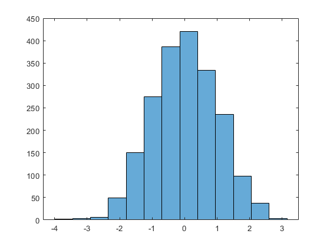
On voit bien que l'histogramme généré décrit bien une loi normale centrée et qu'en reliant le milieu de chaque bin, on obtiendrait bien une courbe gaussienne.
6.3) Regression non linéaire gaussienne
Dû au problème (expliqué en bas de page à la section "Graph") qui est arrivé en suivant la démarche du TP3, une implémentation "à la main" de la génération des paramètres nécéssaire à l'utilisisation de nlinfit à du être faite. Implémentation qui est expliqué ci-dessous:
On a calculé notre variable aléatoire 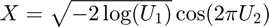 qui nous génère N valeurs (mesures) 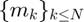 comme celles des champignons l'exercice précédant. Cependant, on ne peut pas tout de suite faire de régression car on a pas de point 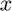 à associer à chaque 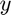 pour avoir de points 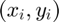 / coordonnées, à approximer par une fonction. On a juste des valeurs générées sans dimensions. (ici 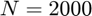)
Soit 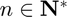, pour générer ces 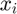, on va définir un intervalle 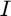 qui va contenir au moins toutes les valeurs de 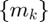 i.e. on a: 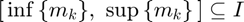
On va ensuite diviser notre en interalle en 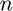 subdivisions et compter le nombre de valeurs générées 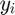 qui appartient à chaque subdivisions 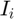. Puis, en représentant chaque intervalle par son milieu , on obtient:
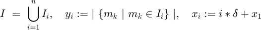
Où 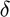 est la distance entre le milieu des 2 premiers intervalles (subdivisions de taille égales). i.e. 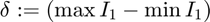 et 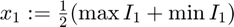
En résumé, on obtient nos couples de points 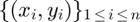 sur lesquels on peut appliquer une régression.
Is = h.BinEdges; % Ensemble qui contient les inf{ I_i } pour tout i
On trie v_normal pour simplifier le calcul des
v_sorted = sort(v_normal); i = 1; % index i des I_i y = zeros(1, n); % ensemble des y_i de taille n for k = 1:N crt = v_sorted(k); I_i = Is(i + 1); % Is contient les inf de I_i, rien n'est inférieur à Is(1) (il faudra rajouter un dernier élément à la main) if i <= n if (crt - I_i) < 0 || isNull(crt - I_i) y(i) = y(i) + 1; else i = i + 1; y(i) = y(i) + 1; end end end
On calcule maintenant les 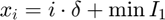 (min I1 = Is(1), max I1 = Is(2))
delta = (Is(2) - Is(1)); x1 = 0.5 * (Is(2) + Is(1)); x = double(0:1:n - 1); x = (x .* delta) + x1
x =
Columns 1 through 7
-3.7250 -3.1750 -2.6250 -2.0750 -1.5250 -0.9750 -0.4250
Columns 8 through 13
0.1250 0.6750 1.2250 1.7750 2.3250 2.8750
y
y =
2 3 6 49 150 275 387 420 334 235 98 38 3
Calcul avec nlinfit
init_values = [max(y), mean(y), std(y)]; optimized_param = nlinfit(x, y, @gaussFun, init_values); A = optimized_param(1); gauss_mean = optimized_param(2); std_dev = optimized_param(3); gauss_opti = @(x) (gaussFun(optimized_param, x));
On obtient les valeurs de , 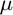 et 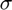 suivantes, respectivement:
A
A = 422.0592
gauss_mean
gauss_mean =
0.0142
et enfin
std_dev
std_dev =
1.0517
Graphes :
interv = [x(1), x(n)]; % x est trié plotreg = @() (fplot(gauss_opti, interv, '-b')); %axis equal figure; plotreg() xlabel('x'); ylabel('y'); grid on; drawnow; hold on; plot(x, y, 'or'); legend('Regression Gaussienne', 'Points (x_i, y_i) originaux', 'location', 'northwest'); drawnow; hold off;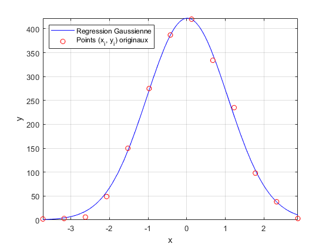
x'
ans =
-3.7250
-3.1750
-2.6250
-2.0750
-1.5250
-0.9750
-0.4250
0.1250
0.6750
1.2250
1.7750
2.3250
2.8750
y
y =
2 3 6 49 150 275 387 420 334 235 98 38 3
Graph
En suivant la démarche du TP3, on obtient l'erreur suivante : C'est pourquoi une implémentation "à la main" de la génération des paramètres nécéssaire à l'utilisisation de nlinfit à du être faite.
Quand on lance le code plusieurs fois on se rend compte que, parfois, la regression marche très bien on trouve , 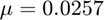 et 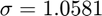 avec un graph qui suit bien le nuage de points. (Voir les images "Gaussian_Reg_Graph_Working.png" et "Gaussian_Reg_Graph_Working2.png" pour 2 exemples)
Mais parfois, pour une raison inexpliqué, on obtient une ligne "constante" comme graph de la fonction de régression, au milieu du nuage de points ainsi que le message d'erreur suviant:
"Some columns of the Jacobian are effectively zero at the solution, indicating that the model is insensitive to some of its parameters. That may be because those parameters are not present in the model, or otherwise do not affect the predicted values. It may also be due to numerical underflow in the model function, which can sometimes be avoided by choosing better initial r by rescaling or recentering. Parameter estimates may be unreliaameter estimates may be unreliable"
On obtient aussi le message "Warning: Rank deficient, rank = 2, tol = 2.561280e-14. > In nlinfit>LMfit (line 587) In nlinfit (line 284)" à la ligne où l'on a appelé linfit.
On obtient des valeurs completement aberrantes du type 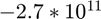 pour l'écart type.
Ce qui est encore plus étrange, c'est que quand on utilse le "publish" de matlab la fonction de régression n'est jamais dessinée. Pourtant si on compile le fichier hors de matlab, il n'y a pas de problème (c.f. images mentionnées plus haut)
Résolution
Après avoir fait l'implémentation "à la main" le problème arrive encore mais moins fréquemment. Plusieurs versions html (published) où ça à marché ont été sauvegardé dans le zip "Ex6-working-html-Backup.zip"
Fonctions
function y = gaussFun(a, x) % a(1) := A - amplitude % a(2) := mean - moyenne de la gaussienne % a(3) := std_dev - standard deviation, i.e. écart type % x - variable de la fonction (mathematiquement, i.e. pas un parametre) y = a(1) .* exp((-0.5) .* (x - a(2)).^2 ./ (a(3)^2)); end function X = normal(n) % Return: X - Vecteur n x 1, un vecteur colonne de taille n dont % les entrées suivent une loi normal centrée tmp = rand(n, 2); U1 = tmp(:, 1); U2 = tmp(:, 2); % % les entrées U1 et U2 sont indépendantes distribuées uniformémemnt sur [0, 1], donc: X = sqrt(-2 .* log(U1)) .* cos((2 * pi) .* U2); end